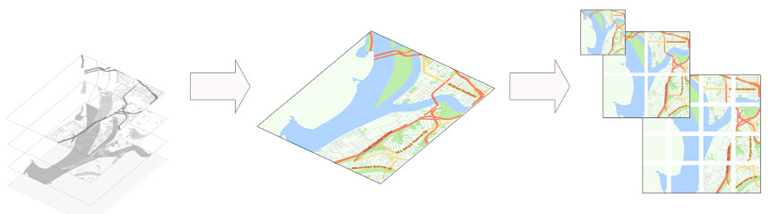

Mapas teselados
(BORRADOR/CONTENIDO PROVISIONAL)
Los servicios de mapeado en la web (web mapping) y las aplicaciones SIG, requieren a menudo mapas contextuales sobre los que referir información.
Las peticiones GetMap dirigidas a Servicios de Mapas Web (WMS), es uno de los métodos de obtención de imágenes cartográficas y mapas de referencia más utilizado por estas aplicaciones.
Mediante este método un servidor atiende la petición de una imagen que le solicita una aplicación cliente.
Para componer la imagen solicitada, el servidor necesita que el cliente le traslade información relativa a la colección de capas geográficas que desea y su simbolización; el sistema geográfico de referencia a utilizar, las coordenadas que definen el marco geográfico del mapa solicitado, así como el formato gráfico de entrega.
Para componer la imagen que le ha sido solicitada, el servidor requiere un tiempo de procesado con el fin de atender los requisitos específicos de cada usuario, por lo que este método no está especialmente diseñado para entornos en los que los tiempos de respuesta y el tamaño de ficheros son muy críticos.
Teselas piramidales
Para optimizar la entrega de mapas en entornos donde se requiere un gran rendimiento, se ha creado una técnica que consiste en trocear el mapa a servir en pequeñas teselas. El usuario mediante este método recibe una colección de teselas a partir de las cuales compone un mosaico de la imagen solicitada, en tanto que el servidor puede atender peticiones paralelamente y de forma muy rápida a través de varios hilos.
Para sistematizar el procedimiento, se ha considerado una estructura piramidal de imágenes en cuyo vértice se ubica una tesela de 256x256 píxeles que incluye la renderización de todo el mundo.
A partir de esta imagen inicial o nivel 0, el siguiente nivel de zoom (1) duplica la dimensión de la imagen en ambas direcciones (512x512 px), estructurándola en 4 teselas de 256x256 px.
El proceso se puede reiterar sucesivamente hasta un nivel 22, que se considera suficiente para la mayor parte de las aplicaciones.

Estos servicios utilizan el Sistema Geográfico de Referencia WGS 84 / Pseudo-Mercator - Spherical Mercator (EPSG:3857), conocido también como Web Mercator.
Direccionamiento XYZ
A diferencia de los servicios WMS, los servicios de distribución de teselas, o Tile Servers, no requieren de una negociación previa, ya que el contenido y las coordenadas de localización de la tesela está preconfigurado de antemano.
El direccionamiento de las teselas, se organiza siguiendo un esquema proio de coordenadas x,y al que se le añade el nivel de zoom (0-22) donde la primera tesela se corresponde con las coordenadas 0,0,0. Estos métodos de localización de teselas se conocen como direccionamiento XYZ.
Aunque las propiedades y ambito geográfico de las teselas coinciden, existen tres esquemas distintos para identificar el direccionamiento xyz:
- Google XYZ: De uso muy generalizado, es utilizada por Google Maps y por la mayor parte de servicios globales de mapas.
- Tile Map Service Specification or TMS: Desarrollado por Open Source Geospatial Foundation y utilizada generalmente en proyectos de software abierto.
- QuadTree: De uso menos extendido, es utilizado en aplicaciones de mapas de Microsoft como Bing
Nota: Para más información puede consultar la web Tiles à la Google Maps: Coordinates, Tile Bounds and Projection editada por MapTiler
Web Map Tile Service (WMTS)
Con objeto de dotar de más eficiencia a los servicios WMS, el Open Geospatial Consortium ha definido para Internet un protocolo de servicios de mapas prerrenderizados denominado Web Map Tile Service (WMTS). Este servicio es capaz de atender peticiones de teselas de las mismas características y esquemas de direccionamiento que los utilizados por los servicios de teselas XYZ.
15 julio 2018